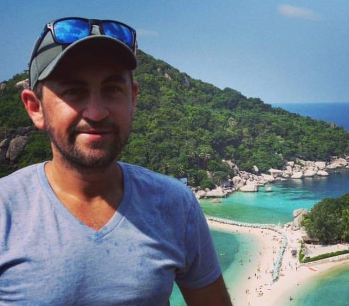

Today, I started a new chapter of my life. Ever since I have left school, I have always been curious and passionate to travel the world, to see and experience new and different things.
Whilst, that will always be apart of my life and I have cherished my opportunities and the people I have met, in these times, I’ve decided to venture on a new track.
This was something I had been considering for a while, I just had to get my ducks in a row and figure it out. Well, now I have. I have enrolled in a course to study Web Development and let’s just say I am pretty excited! I now have the option to learn and develop and create some awesome things, really fueling my creative side!
During the orientation today, I met some really interesting people, all from different walks of life to my own, it’s great to see such diversity of people and their passion! I am looking forward to what the next year will bring and I look forward to sharing the results of my work to you!
BRING IT ON!!!

Me on another adventure in Ko Tao, Thailand
Project 1.0 - Travel Blog
My first project I decided to embark on as a Junior Web Developer is a Travel Blog. I thought it was fitting to tie my old life into my new life
There were a fair bit of challenges when building the base of the page. My header image wasn't aligning the way I wanted it to and the text would fix to be on top of the image to the top-left, instead it appeared to be larger than life!
These were things I had to fix! So I began to think about why the header image and header text was behaving like that and what I could do to fix it. I first played around with the code, trying different styling techniques, then when I was really stuck on certain points, I gained some outside help from an YouTube tutorial video or two!
The finished product for the header finalling came about when all elements were in there place.